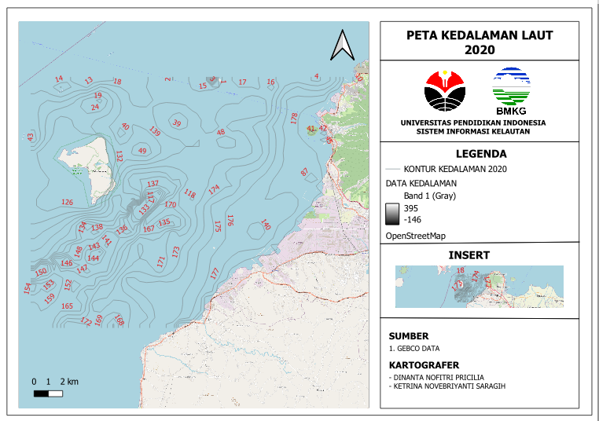
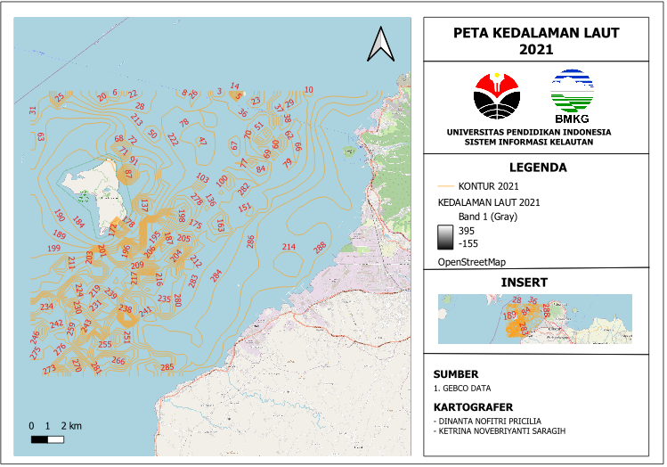
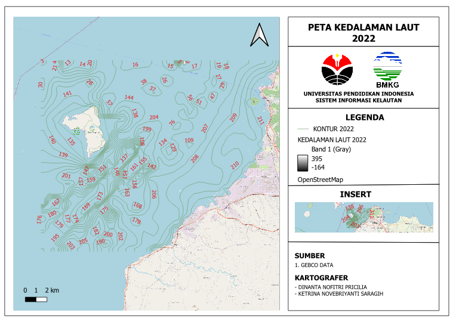
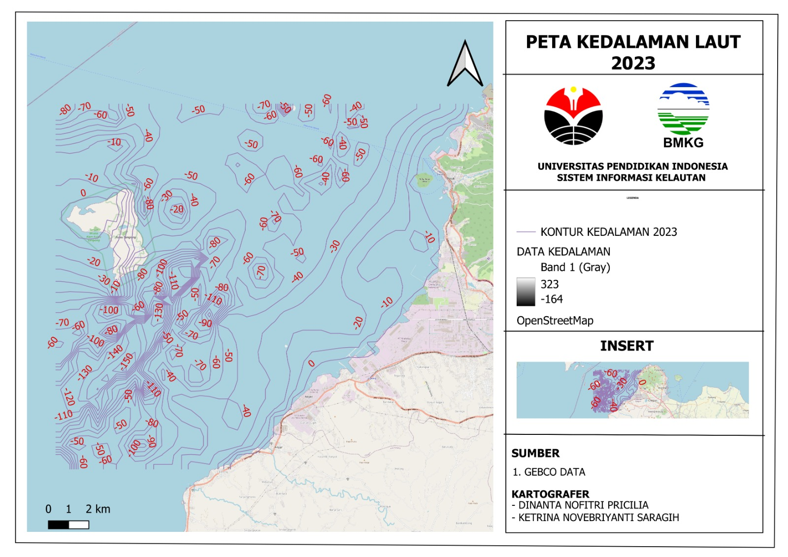
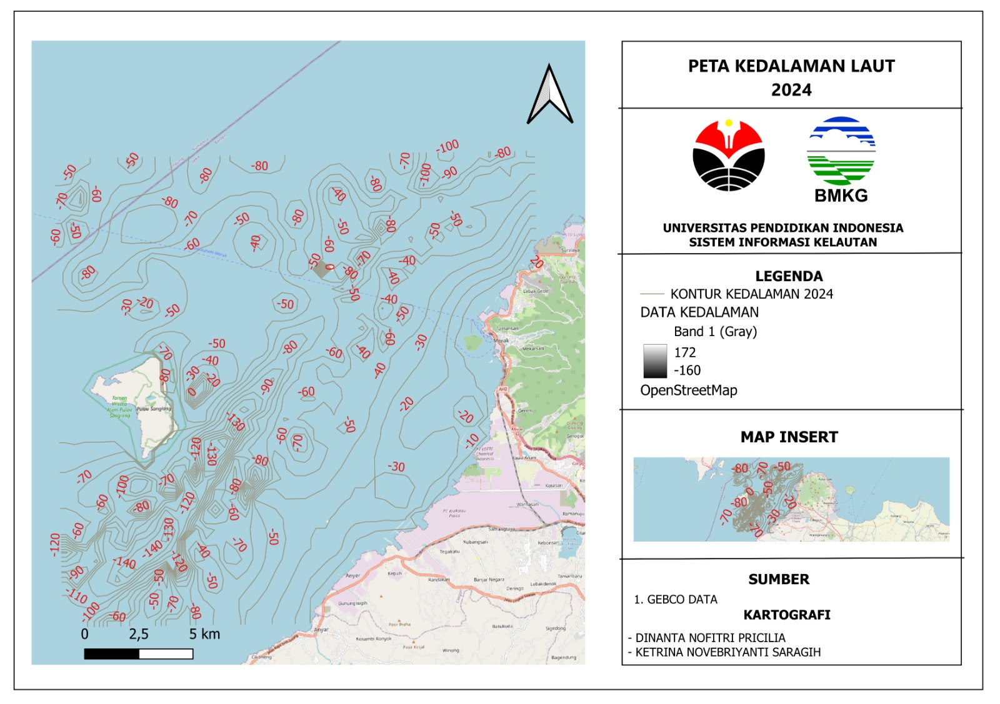

Reklamasi Kawasan PLTU Suralaya Terkait Pengembangan Unit 9 dan Unit 10
Tahun: 2020 - 2025
Read🌊 Suaramu Menyelamatkan Laut – Dukung Gerakan Konservasi Sekarang! 🌱
Selat Sunda, khususnya kawasan Pelabuhan Merak, merupakan wilayah laut yang dinamis dengan karakteristik oseanografi unik seperti kedalaman, kecepatan arus, dan arah pergerakan air laut. Melalui pemantauan data oseanografi, kita dapat melihat perubahan yang terjadi dari tahun ke tahun – baik akibat proses alami maupun intervensi manusia seperti reklamasi dan industrialisasi.
Seiring meningkatnya aktivitas industri dan rencana reklamasi oleh pabrik-pabrik di sekitar Pelabuhan Merak, kita menyaksikan penurunan kedalaman laut secara drastis serta gangguan terhadap arah dan kecepatan arus. Hal ini berpotensi mengganggu aktifitas pelabuhan dan mempercepat abrasi ataupun sedimentasi.
Penting bagi kita untuk memanfaatkan data oseanografi ini sebagai alat advokasi lingkungan. Dengan menyuarakan bukti perubahan fisik laut secara ilmiah, kita dapat mengajak masyarakat dan pemangku kepentingan lainnya untuk meninjau kembali kebijakan reklamasi.
Mari bersama kita jaga laut Selat Sunda, hentikan reklamasi yang merusak, dan jadikan Pelabuhan Merak sebagai contoh sukses konservasi berbasis data.
Laporkan perubahan lingkungan atau dukung kampanye konservasi laut di Selat Sunda.
PETA BATIMERI PELABUHAN MERAK TAHUN 2020
Analisis Perubahan Kedalaman 2020
- Kedalaman Minimum: -146.00 m
- Kedalaman Maksimum: 395.00 m
- Kedalaman Rata-rata: -19.67 m
- Standar Deviasi: 57.13 m
PETA BATIMERI PELABUHAN MERAK TAHUN 2021
Analisis Perubahan Kedalaman 2021
- Kedalaman Minimum: -155.00 m
- Kedalaman Maksimum: 395.00 m
- Kedalaman Rata-rata: -17.82 m
- Standar Deviasi: 57.92 m
PETA BATIMERI PELABUHAN MERAK TAHUN 2022
Analisis Perubahan Kedalaman 2022
- Kedalaman Minimum: -164.00 m
- Kedalaman Maksimum: 395.00 m
- Kedalaman Rata-rata: -21.88 m
- Standar Deviasi: 59.87 m
PETA BATIMERI PELABUHAN MERAK TAHUN 2023
Analisis Perubahan Kedalaman 2023
- Kedalaman Minimum: -164.00 m
- Kedalaman Maksimum: 323.00 m
- Kedalaman Rata-rata: -23.35 m
- Standar Deviasi: 55.23 m
PETA BATIMERI PELABUHAN MERAK TAHUN 2024
Analisis Perubahan Kedalaman 2024
- Kedalaman Minimum: -160.00 m
- Kedalaman Maksimum: 172.00 m
- Kedalaman Rata-rata: -42.24 m
- Standar Deviasi: 42.88 m
Visualisasi Tahun 2020

Visualisasi Tahun 2021

Visualisasi Tahun 2022

Visualisasi Tahun 2023

Visualisasi Tahun 2024

Reklamasi adalah proses pengurukan atau penimbunan wilayah perairan seperti laut, rawa, atau muara sungai untuk dijadikan daratan baru yang biasanya dimanfaatkan untuk keperluan pembangunan industri, pemukiman, infrastruktur pelabuhan, atau kawasan ekonomi. Dalam konteks pelabuhan, reklamasi sering dilakukan untuk memperluas area dermaga, membangun gudang logistik, atau menciptakan zona industri maritim yang mendukung kegiatan bongkar muat. Meskipun reklamasi dapat memberikan manfaat ekonomis jangka pendek, proses ini juga memicu perubahan besar pada ekosistem pesisir dan dinamika laut di sekitarnya.
Urgensinya terhadap aktivitas pelabuhan terletak pada dua sisi yang bertolak belakang. Di satu sisi, reklamasi dianggap penting untuk meningkatkan kapasitas dan efisiensi pelabuhan, terutama di wilayah dengan keterbatasan lahan daratan. Penambahan area dapat mendukung pertumbuhan volume perdagangan dan pelayaran, serta membuka peluang investasi. Namun di sisi lain, reklamasi dapat mengganggu stabilitas lingkungan laut dengan mengubah pola arus, mempersempit alur pelayaran, dan menyebabkan sedimentasi berlebihan. Hal ini berpotensi mengganggu keselamatan pelayaran kapal, memperbesar risiko kandas, serta menambah biaya pemeliharaan alur pelayaran melalui pengerukan berkala.
Oleh karena itu, reklamasi harus dilihat secara kritis, bukan hanya sebagai proyek pembangunan, tetapi sebagai intervensi besar terhadap ekosistem pesisir. Pelabuhan merupakan simpul vital mobilitas barang dan manusia, sehingga kualitas dan keamanan perairannya harus dijaga. Reklamasi tanpa kajian lingkungan yang matang dapat menyebabkan kerusakan jangka panjang seperti penurunan kualitas air, rusaknya habitat biota laut, hingga konflik sosial dengan masyarakat pesisir. Maka, keberlanjutan aktivitas pelabuhan harus seimbang antara kebutuhan pengembangan fisik dan konservasi lingkungan pesisir secara ilmiah dan terpadu.
Reklamasi yang dilakukan tanpa kajian lingkungan yang matang akan mempercepat proses abrasi di pesisir. Abrasi adalah terkikisnya daratan oleh gelombang laut yang kuat, dan reklamasi memperparah ini dengan mengubah pola alami arus laut. Akibatnya, garis pantai akan semakin mundur, mengancam permukiman, infrastruktur, dan ekosistem pesisir. Kondisi ini tidak hanya merugikan lingkungan, tetapi juga ekonomi masyarakat yang bergantung pada laut. Mari kita sadari bahwa menjaga garis pantai berarti melindungi kehidupan pesisir dan keberlanjutan sumber daya laut kita.
Selain abrasi, reklamasi juga memicu sedimentasi berlebihan di area tertentu. Sedimentasi ini menyebabkan perairan menjadi dangkal, memperburuk jalur pelayaran, mengganggu habitat ikan, dan mengancam produktivitas sektor perikanan. Jika kita terus membiarkan reklamasi tanpa kontrol, maka masa depan laut kita akan semakin terancam. Saatnya kita bersama mendorong pengelolaan pesisir yang bijak dan berkelanjutan, demi memastikan laut tetap menjadi sumber kehidupan, bukan korban dari keserakahan manusia.
Studi kami menunjukkan bahwa reklamasi di Pelabuhan Merak menyebabkan penurunan kedalaman laut dari -17.82 m pada 2021 menjadi -42.24 m pada 2024. Kecepatan dan arah arus laut pun berubah signifikan, mengindikasikan redistribusi sedimen dan peningkatan abrasi di titik-titik sekitar reklamasi.
Video ini menunjukkan tren perubahan batimetri dan arah arus laut di Pelabuhan Merak selama periode 2020–2024 akibat reklamasi.
PLTU Suralaya merupakan pembangkit listrik tenaga uap yang berlokasi di wilayah Banten, Indonesia. Pengembangan Unit 9 dan Unit 10 di PLTU Suralaya merupakan upaya untuk meningkatkan kapasitas pembangkit listrik dengan menambah dua unit pembangkit berkapasitas besar. Unit 9 dan 10 ini dirancang untuk memperkuat pasokan listrik di wilayah Jawa dan Bali, serta mendukung pemenuhan kebutuhan energi yang terus berkembang. Reklamasi kawasan sekitar PLTU Suralaya dilakukan untuk menyediakan ruang bagi pembangunan fasilitas penunjang pembangkit dan pelabuhan yang lebih besar, yang diharapkan dapat mendukung operasional dan distribusi energi yang lebih efisien.
Namun, reklamasi kawasan PLTU Suralaya dapat menimbulkan dampak negatif terhadap lingkungan pesisir, terutama di sekitar Pelabuhan Merak. Proyek reklamasi berisiko meningkatkan sedimentasi dan abrasi, yang dapat mempengaruhi ekosistem laut dan kualitas perairan di sekitar pelabuhan. Selain itu, perubahan kedalaman laut dan pengalihan aliran air dapat berdampak pada kegiatan pelayaran dan penangkapan ikan di kawasan tersebut. Jika tidak dikelola dengan hati-hati, reklamasi ini dapat mengganggu keberlanjutan ekosistem pesisir yang sudah ada dan mempengaruhi aktivitas ekonomi yang bergantung pada sumber daya laut di sekitar Pelabuhan Merak.

Tahun : 2020
ReadPembangunan Dermaga IV Pelabuhan Penyeberangan Merak–Bakauheni oleh PT ASDP Indonesia Ferry dimulai pada awal tahun 2020 sebagai bagian dari upaya meningkatkan kapasitas dan efisiensi layanan penyeberangan tersibuk di Indonesia tersebut. Proyek ini merupakan kelanjutan dari pengembangan infrastruktur penyeberangan yang vital untuk konektivitas antar-pulau, khususnya antara Pulau Jawa dan Sumatra. Dermaga IV dibangun dengan konstruksi struktur darat dan laut, termasuk pemancangan, betonisasi, serta fasilitas pendukung lainnya, dan berhasil diselesaikan pada Oktober 2020.
Pembangunan ini secara umum bertujuan untuk mengurangi antrean kendaraan, meningkatkan kelancaran arus logistik, dan mempercepat waktu bongkar muat kapal. Namun, di sisi lain, proses konstruksi yang melibatkan pengerukan dan pengurukan berdampak terhadap lingkungan pesisir di sekitarnya. Aktivitas ini menyebabkan perubahan arus laut dan redistribusi sedimen, yang secara tidak langsung memicu pendangkalan di beberapa area perairan sekitar Pelabuhan Merak. Oleh karena itu, meskipun proyek ini membawa manfaat dari sisi transportasi dan ekonomi, tetap diperlukan pemantauan terhadap dampak lingkungannya agar keberlanjutan kawasan pesisir tetap terjaga.
Tahun: 2020 - 2025
ReadPada tahun 2019, PT Lotte Chemical Indonesia (LCI) melaksanakan proyek reklamasi di kawasan Selat Sunda dengan tujuan memperluas fasilitas pelabuhan miliknya. Reklamasi ini mencakup area seluas 12 hektare dan dirancang untuk menunjang aktivitas logistik serta distribusi industri kimia yang dikembangkan oleh perusahaan. Dengan adanya perluasan ini, LCI berharap dapat meningkatkan efisiensi operasional pelabuhan sekaligus mendukung pertumbuhan kapasitas produksi mereka di kawasan tersebut.
Namun, proyek reklamasi ini juga menimbulkan berbagai perhatian terhadap dampak lingkungan yang mungkin terjadi, seperti perubahan pada ekosistem pesisir, peningkatan sedimentasi, dan perubahan arus laut di sekitar wilayah reklamasi. Pembangunan ini menunjukkan bagaimana pertumbuhan industri harus mempertimbangkan keseimbangan antara kebutuhan ekspansi ekonomi dan pelestarian lingkungan, agar manfaat jangka panjang dapat dirasakan tanpa merusak keberlanjutan sumber daya alam di kawasan Selat Sunda.